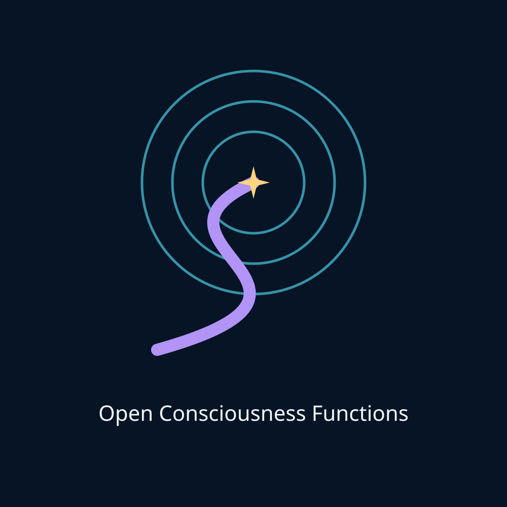
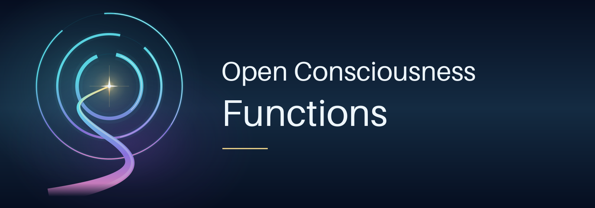
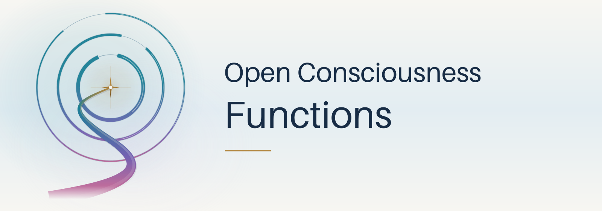
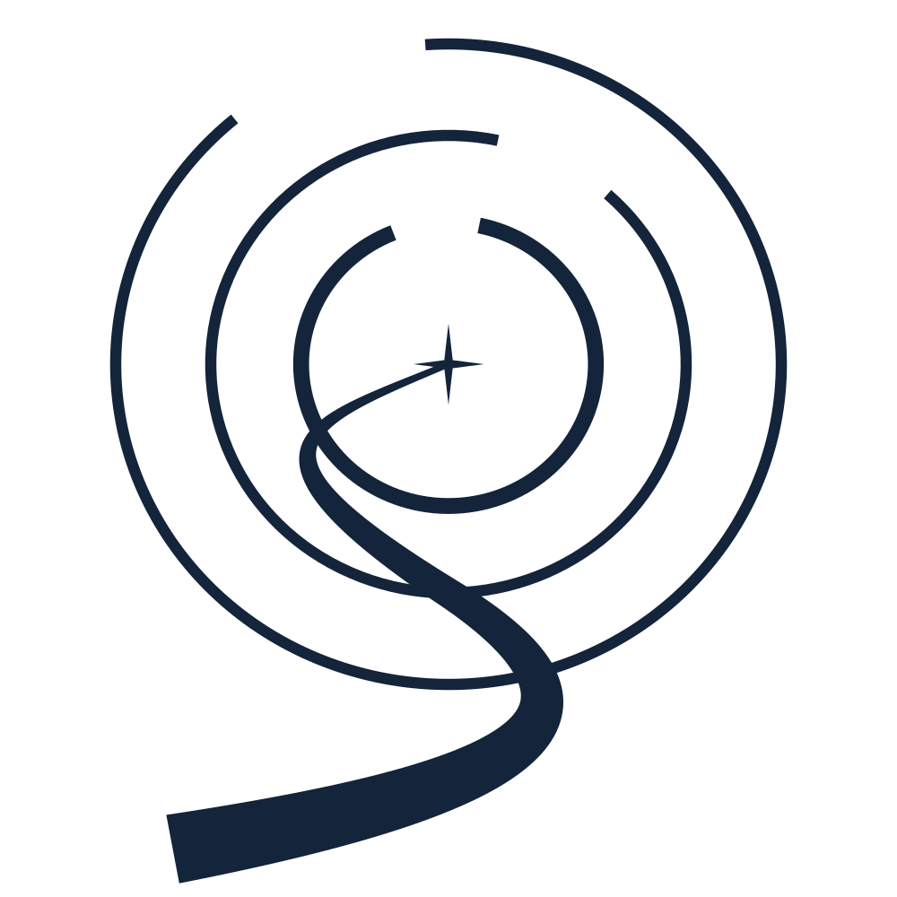
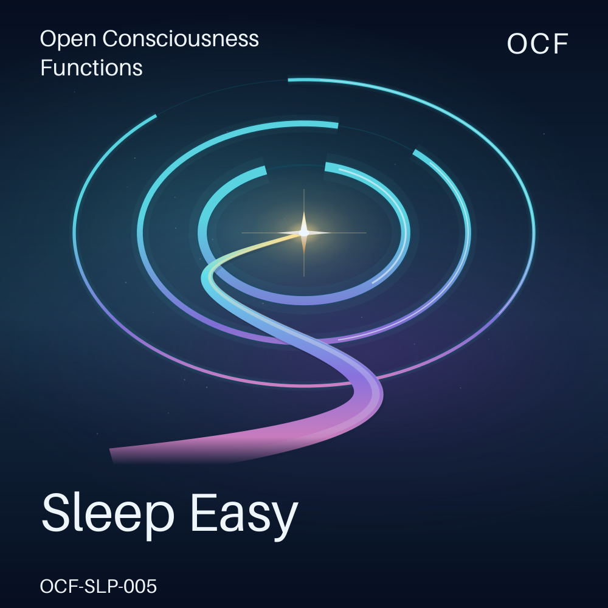
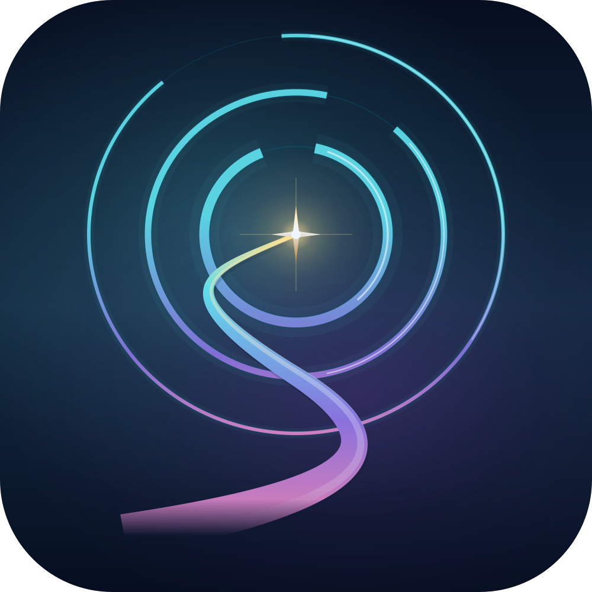
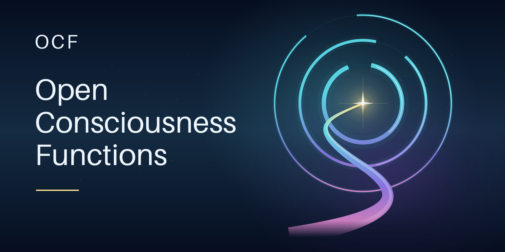

Current baseline · 0.1.0
Candidate
Original candidate, retained exactly for comparison.
Original visual candidates. Human design approval remains pending.
The retained baseline and refined compositions are shown at practical display sizes. Interface appearance is independent of the artwork: changing this page theme does not recolor the fixed dark, light and minimal comparisons. No final identity is published by this gallery.

Original candidate, retained exactly for comparison.

Larger emblem, dimensional ribbon and a two-line wordmark.

Pearl / ice atmosphere, ink typography and metallic gold.

A simplified, single-ink mark for small-scale recognition.

An expansive resonance field, restrained atmosphere and prominent title.

A rounded tile with an enlarged emblem; no miniature lettering.

A dedicated 2:1 composition with a large three-line wordmark.